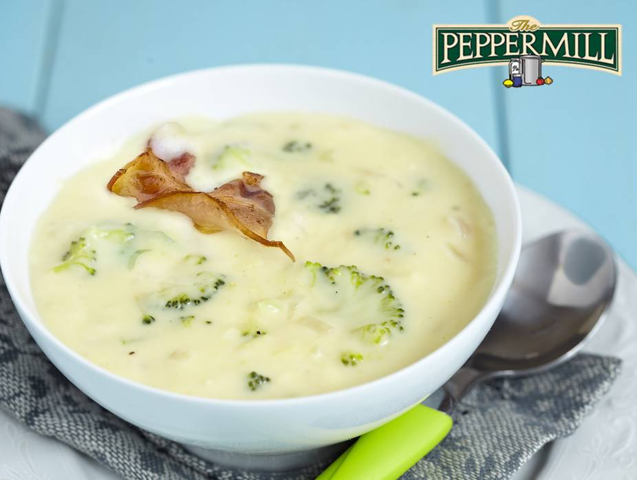
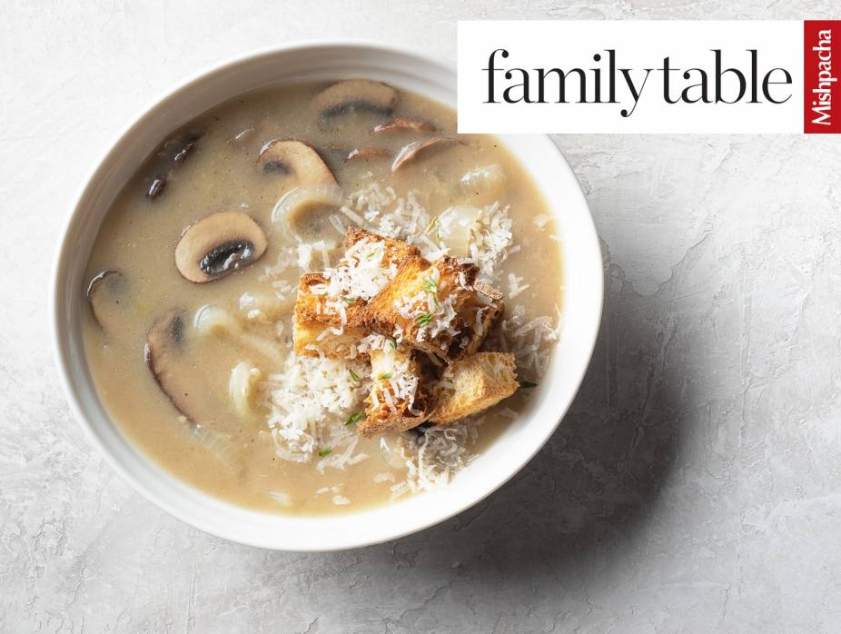

Difficulty: Easy
Cooking and Prep: 1 hr 20 min
Serves: 6
Allergy: Contains DAIRY
Ingredients
Main Ingredients
4 medium butternut squash, halved and seeded
2 tablespoons butter
1 tablespoon olive oil
4 tablespoons heavy cream
1 and 1/2 large white onions, thinly sliced
1 cooking apple, diced
pinch of nutmeg
1/2 teaspoon Gefen Ginger
2 teaspoons curry powder, divided
1 clove garlic, crushed
1 tablespoon light brown sugar
4 cups Manischewitz® Vegetable Broth
2 teaspoons Manischewitz® Creamy Horseradish Sauce- Original
kosher salt
Prepare the Soup
Preheat oven to 400ºF.
Place squash, cut side up, on a baking sheet. Bake for 30 minutes, or until tender.
When squash is cool enough to handle, peel with a knife and chop roughly.
In a large pot over medium high heat, melt the butter with the olive oil. Add the sliced onions and sauté about five minutes. Add the diced apple, nutmeg, ginger, one teaspoon curry powder, and garlic. Cook for 10 minutes, stirring often with a wooden spoon, until the onions become tender. Add the brown sugar and mix well. Let simmer for another five minutes.
Add the Manischewitz® Vegetable Broth to the pot. Bring the mixture to a boil, then add the butternut squash and mix. Continue cooking for an additional 10 minutes, stirring often.
Purée soup with a hand blender until smooth, adding more broth as needed to achieve your desired consistency. Season with salt and pepper and bring back to a simmer.
To make the horseradish cream: Whip the cream in a bowl until stiff, then stir in the horseradish sauce and remaining curry powder. Cover and chill in the refrigerator until needed.
Serve hot.

Broccoli Cheddar Soup with Cheddar Potato Skins
Difficulty: Easy
Cooking and Prep: 45 min
Serves: 8
Allergy: Containes DAIRY
Author: The Peppermill
Ingredients
Potato Crisps
4 Idaho Potatoes
Gefen Canola Oil
Soup
2 tablespoons butter
1 large onion, diced
32 ounces fresh or Beleaf Frozen Broccoli Florets
1 teaspoon Gefen Onion Powder
1/4 teaspoon nutmeg
1 tablespoon Haddar Kosher Salt
freshly-ground Gefen Pepper, to taste
6 cups water
1 cup milk
2 and 1/2 cups shredded cheddar cheese, divided
Prepare the Potato Crisps
Preheat oven to 400ºF.
Scrub potatoes well. Using a paring knife, peel potato skin into strips, taking some flesh with the peel. Strips should be about one and 1/2 inches wide. You should have about 24 strips.
Cut potatoes into cubes and set aside. Place peeled strips on a sheet pan, skin side up. Drizzle with one tablespoon oil or cooking spray.
Roast until edges are crisp, about 25 minutes. Remove from oven.
Prepare the Soup
Heat butter in a six-quart stockpot. Sauté onions over medium heat until slightly-browned, stirring occasionally to keep them from burning.
Add broccoli and cubed potatoes, then add onion powder, nutmeg, salt and pepper. Add six cups water and cook over medium heat for 20 minutes or until broccoli and potatoes are tender.
Add milk and puree soup using a hand blender. Stir in one and 3/4 cups cheddar cheese until melted. Taste and add salt or pepper as desired.
Turn potato skins over and sprinkle with remaining shredded cheddar.
Divide soup among eight soup crocks or heat-proof bowls. Top with three to four potato skins and place all the crocks on a sheet pan. Return to oven for five minutes or until cheese melts. Serve immediately.

Best Dairy Onion Soup Ever
My daughter and I ate in a restaurant that had the most incredible onion soup. I’m not usually an onion soup fan, but this one had the perfect texture and flavor. We recreated it here for all of you. It’s so good that when we made a dairy sheva brachos for my niece and had a choice for the soup, almost everyone took this.
Difficulty: Easy
Cooking and Prep: 1 hr 40 min
Serves: 10
Allergy: Containes DAIRY, GLUTEN, WHEAT
Author: Family Table
Ingredients
Main Ingredients
1/2 cup (1 stick) butter
8 small-medium onions, sliced
3 garlic cloves, sliced
1/2 cup flour (Shibolim Whole Wheat Flour or other whole wheat pastry is fine)
2 tablespoons onion soup mix
Haddar Kosher Salt, to taste (be generous)
black pepper, to taste
pinch nutmeg
1 (10-oz./280-g.) can sliced mushrooms (optional, but recommended)
3 tablespoons Herzog Selection Chateneuf Bordeaux or other semidry white wine
croutons, for garnish
Parmesan cheese, for garnish
shredded cheese, for garnish
feta cheese cut into tiny cubes, for garnish
Prepare the Soup
Melt butter in a four to five-quart pot. Add onions and garlic and sauté over low heat (this is crucial) until golden, about 25–30 minutes, stirring constantly. Turn up the heat for the last five minutes. Add flour and mix in well.
Add seven to eight cups of water (depending on how thick you like your soup) and bring to a boil. Add onion soup mix, salt, pepper, and nutmeg, and cook for 40 minutes. Add mushrooms, if desired, five minutes before the end. Add wine and stir.
Remove soup from heat. Taste and adjust flavorings accordingly. Garnish if desired.
For a special occasion, serve in bread bowls. Soup can be frozen.
Note: I almost never use canned mushrooms. Here, I used them for convenience and to add more texture to the soup. The flavor isn’t prominent.